ZIMA-CAD / Руководства
Найдите следующий шаг.
Наглядные руководства по отдельным инструментам. Одни и те же материалы на сайте и в ZIMA-CAD.
Руководств: 156
Вводные руководства
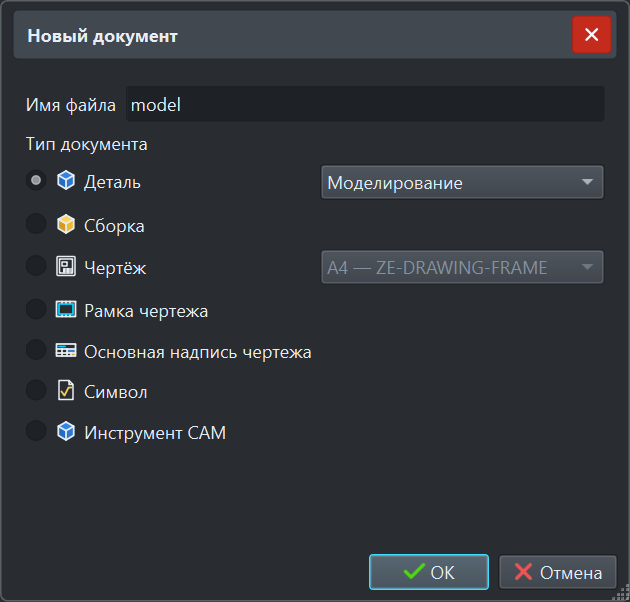
Начало работыОткрыть руководство ЭскизОткрыть руководство
ЭскизОткрыть руководство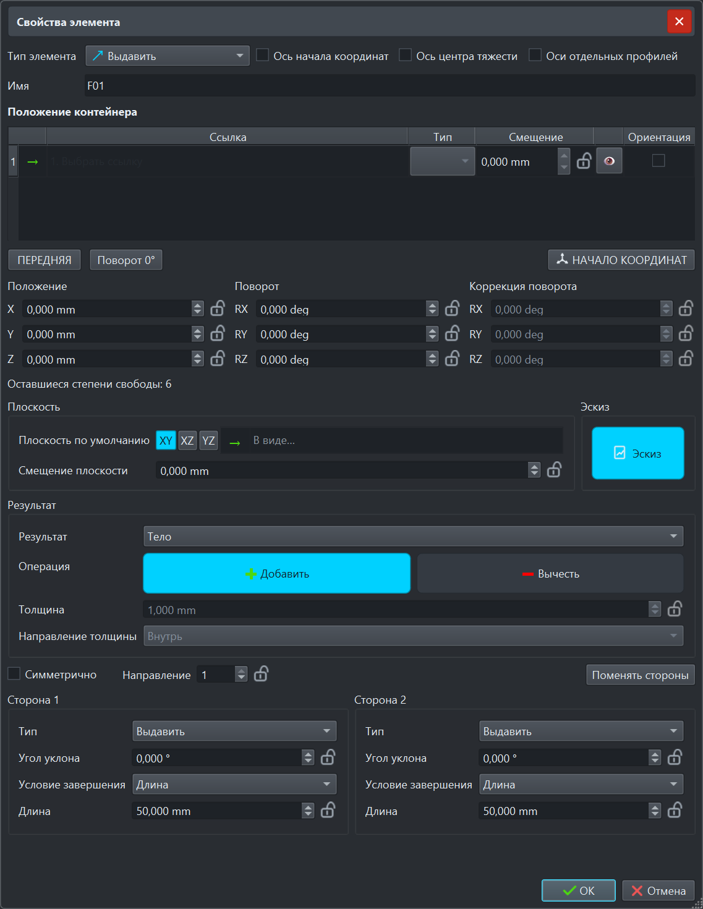
Выдавливание и вращениеОткрыть руководство Скругление и фаскаОткрыть руководство
Скругление и фаскаОткрыть руководство ПротягиваниеОткрыть руководство
ПротягиваниеОткрыть руководство Листовой металлОткрыть руководство
Листовой металлОткрыть руководство СборкиОткрыть руководство
СборкиОткрыть руководство ЧертежиОткрыть руководство
ЧертежиОткрыть руководство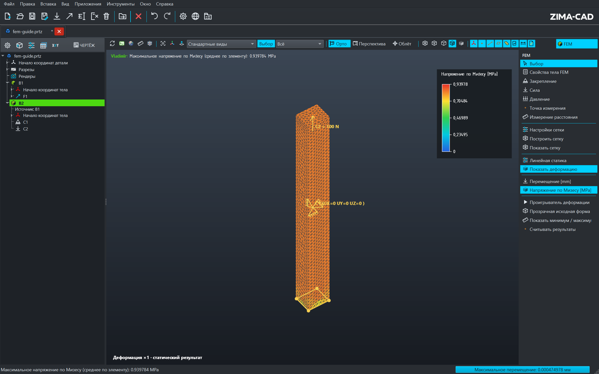
МКЭОткрыть руководство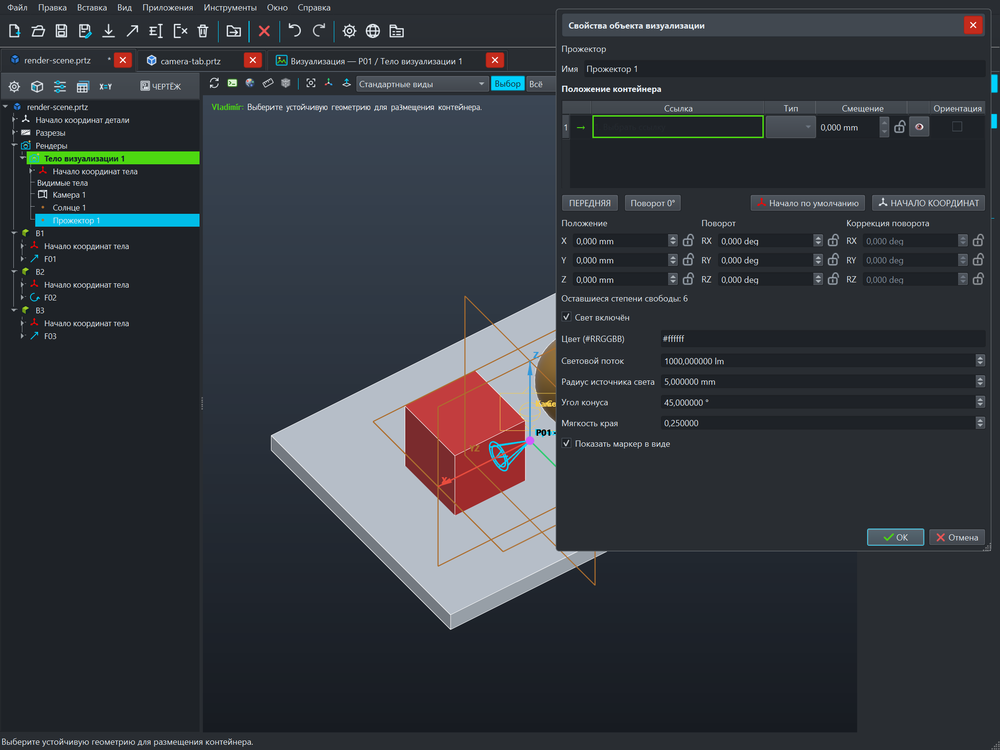
ВизуализацияОткрыть руководство CAMОткрыть руководство
CAMОткрыть руководствоОбщие команды
Вернуться к сборкеЗавершает редактирование активированного исходного документа внутри отображаемой сборки.Открыть руководствоВыборВключает обычный выбор объектов в окне модели.Открыть руководствоЗеркальное отражениеСоздаёт связанную зеркальную копию исходного объёмного элемента, тела или компонента.Открыть руководствоМассивПовторяет связанный источник в линейном или круговом массиве.Открыть руководствоСимволВставляет собственный библиотечный символ в эскиз или как аннотацию модели.Открыть руководствоСоздать CAMСоздаёт наладку CAM для обработки заготовки до целевой формы.Открыть руководствоСоздать визуализациюСоздаёт тело визуализации с общей сценой для рассчитанных тел детали.Открыть руководствоСоздать разрезСоздаёт сохранённый разрез для просмотра детали или сборки.Открыть руководство
Тела и производные результаты
Моделирование
2D-протяжкаПроведите профили станций вдоль собственного плоского пути.Открыть руководство3D-криваяЗадайте пространственную траекторию через постоянные собственные точки.Открыть руководство3D-протяжкаПроведите профили по пространственному пути, заданному точками.Открыть руководствоВинтовая криваяСоздайте отдельную винтовую траекторию без протягиваемого сечения.Открыть руководствоВосстановить формуВосстановите заданную форму после выпрямления объёмных элементов.Открыть руководствоВращениеПоверните профиль вокруг заданной конструкционной оси.Открыть руководствоВыдавитьВыдавите профиль в объёмную, поверхностную или тонкостенную геометрию.Открыть руководствоВыдавливание по спиралиПроведите сечение вдоль управляемой винтовой траектории.Открыть руководствоВыпрямитьРассчитайте выпрямленное состояние поддерживаемых объёмных элементов.Открыть руководствоГраньСоздайте плоскую поверхность, ограниченную собственным эскизом.Открыть руководствоОбернуть рельефСоздайте выступающий или утопленный материал из обёрнутых замкнутых контуров.Открыть руководствоОбернуть эскизОберните плоский эскиз по поддерживаемым аналитическим граням.Открыть руководствоОболочкаСоздайте внутренние полости в рассчитанных телах с сохранением толщины стенок.Открыть руководствоОсьСоздайте конечную опорную ось с независимым управлением концами.Открыть руководствоОтверстиеСоздайте гладкое отверстие или отверстие с внутренней резьбой одной операцией.Открыть руководствоОтверстияВырежьте цилиндрические каналы вдоль отрезков эскиза.Открыть руководствоПереход / LoftСоздайте переход через собственные плоские профильные эскизы.Открыть руководствоПлоскостьСоздайте смещённую опорную плоскость для последующих ссылок.Открыть руководствоРезьбаДобавьте условную наружную резьбу на цилиндрический вал.Открыть руководствоСверлильный кончикДобавьте конические вершины сверления к существующим круглым доньям отверстий.Открыть руководствоСкруглениеСкруглите выбранные рёбра фактического исходного тела или сшитой оболочки.Открыть руководствоСкрутитьСкрутите заполненный профиль вдоль его центральной оси.Открыть руководствоСпроецировать рельефДобавьте или удалите рельеф проецированием заполненного эскиза.Открыть руководствоСпроецировать эскизСпроецируйте плоский эскиз на выбранные грани.Открыть руководствоТочкаСоздайте постоянную опорную точку в начале координат элемента.Открыть руководствоФаскаСоздайте фаски на входных рёбрах с заданными расстояниями или углом.Открыть руководствоЭлементЗадайте опорную геометрию или профильный элемент в одном диалоге.Открыть руководствоЭскизСоздайте собственный плоский эскиз как опорный элемент.Открыть руководство
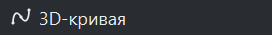
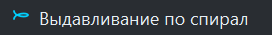
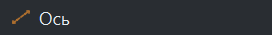
Поверхности
Заполнить поверхностьЗаполните замкнутый периметр по ссылкам на существующие границы.Открыть руководствоОбрезать поверхностьСохраните выбранную область рассчитанной поверхности.Открыть руководствоОбщая поверхностьПостройте поверхность по редактируемым границам, принадлежащим её контейнеру.Открыть руководствоПересечение поверхностейСоздайте повторно используемые кривые пересечения и отдельные точки контакта.Открыть руководствоПоверхности из телаЗамените рассчитанное объёмное тело его точной оболочкой нулевого объёма.Открыть руководствоПридать поверхности толщинуПреобразуйте свободную поверхность или связную сшитую оболочку в материал.Открыть руководствоСшить поверхностиСоедините рассчитанные грани поверхностей в одну связную оболочку.Открыть руководство
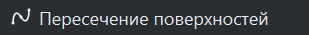
Механические элементы
Листовой металл
DXFЭкспортируйте производственный контур активного листового тела в DXF.Открыть руководствоВырез в листеПрорежьте локальную толщину пересекаемых областей листа.Открыть руководствоЛист вращенияСоздайте цилиндрический или конический лист вращением отрезка.Открыть руководствоЛист из телаВосстановите поддерживаемую листовую геометрию из рассчитанного объёмного тела.Открыть руководствоЛистовая заготовкаСоздайте плоский лист из замкнутого эскиза.Открыть руководствоПереход из листаСоедините полукруглый профиль с открытым скруглённым полупрямоугольником листовыми панелями и гибами.Открыть руководствоПрофильПреобразуйте плоскую траекторию в обычные дочерние плоские участки и гибы.Открыть руководствоПрямоугольный переход листаСоедините две прямоугольные оболочки L- или U-образным листовым переходом.Открыть руководствоРазогнутьСоздайте развёрнутое состояние истории для допустимых областей листа.Открыть руководствоСвойства листового металла…Задайте общие параметры листового металла для детали.Открыть руководствоСгибСоздайте дуговой гиб листа с редактируемой шириной концов.Открыть руководствоСгиб по линииСогните листовой материал вокруг конечной линии эскиза.Открыть руководствоСкрученный листСоздайте параметрическую скрученную листовую полосу без редактирования эскиза.Открыть руководствоСогнуть обратноВерните допустимые развёрнутые области листа в согнутое состояние.Открыть руководствоФормовкаВставьте собственную библиотечную форму в листовой материал.Открыть руководство
Эскиз
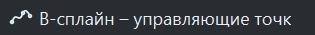
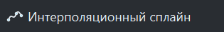
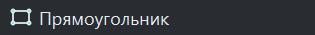
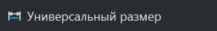
Сборки
Вставить компонентВставляет существующую деталь или подсборку как связанный компонент.Открыть руководствоНанести кривуюНаносит собственный плоский эскиз на аналитические грани как кривые сборки.Открыть руководствоПроецировать кривуюПроецирует плоский эскиз на выбранные грани как опорные кривые сборки.Открыть руководствоСоздать компонентСоздаёт новую исходную деталь или подсборку и вставляет её в активную сборку.Открыть руководство
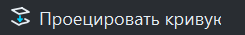
Чертежи
DXFБыстро экспортирует текущий активный лист чертежа в DXF.Открыть руководствоPDFБыстро экспортирует весь чертёж в PDF в настроенную относительную папку.Открыть руководствоВставить видВставляет новый основной вид из выбранного источника чертежа.Открыть руководствоВставить деталь вида…Создаёт увеличенный выносной вид ограниченной области существующего вида.Открыть руководствоВставить изломВставляет излом в выносную линию измерительного размера чертежа.Открыть руководствоВставить разрывВставляет промежуток в выносную линию измерительного размера чертежа.Открыть руководствоВыборВосстанавливает обычный выбор видов и аннотаций на листе чертежа.Открыть руководствоВыровнять размерыВыравнивает параллельные измерительные размеры по первому выбранному размеру.Открыть руководствоПозицииДобавляет номера позиций первого уровня спецификации листа.Открыть руководствоПоказать / скрыть размеры…Управляет видимостью исходных аннотаций модели в отдельных видах чертежа.Открыть руководствоРазмерСоздаёт измерительный размер чертежа, связанный с геометрией вида.Открыть руководствоСимволВставляет библиотечный символ непосредственно как аннотацию листа чертежа.Открыть руководствоТекстДобавляет обычный многострочный текст непосредственно на лист чертежа.Открыть руководствоЦепочка размеровСоздаёт или продолжает цепочку размеров в одном виде чертежа.Открыть руководство
МКЭ
ДавлениеНагрузите выбранную поверхность давлением в MPa.Открыть руководствоЗакреплениеОграничьте выбранные перемещения FEM механическим условием.Открыть руководствоИзмерение расстоянияСравните исходное и деформированное расстояния между двумя измерительными точками.Открыть руководствоИсточник теплаЗадайте суммарную тепловую мощность для выбранной области.Открыть руководствоЛинейная статикаЗапустите решение по типу анализа активного тела FEM.Открыть руководствоНапряжение по Мизесу [MPa]Покажите эквивалентное напряжение по Мизесу в MPa.Открыть руководствоНастройки сеткиНастройте плотность сетки и порядок элементов перед построением.Открыть руководствоПеремещение [mm]Покажите величину механического перемещения в миллиметрах.Открыть руководствоПоказать деформациюПокажите или скройте корректный результат FEM.Открыть руководствоПоказать минимум / максимумОтметьте минимум и максимум отображаемой величины результата.Открыть руководствоПоказать сеткуПокажите или скройте уже построенную сетку FEM.Открыть руководствоПостроить сеткуПостройте объёмную сетку для текущего определения FEM.Открыть руководствоПрозрачная исходная формаСравните деформированный результат с прозрачным исходным телом.Открыть руководствоПроигрыватель деформацииНастройте визуальное увеличение и воспроизведение деформации.Открыть руководствоСвойства тела FEMИзмените источник и тип анализа существующего тела FEM.Открыть руководствоСилаЗадайте направленную механическую силу в ньютонах.Открыть руководствоСоздать FEMСоздайте тело FEM, связанное с рассчитанным объёмным телом детали.Открыть руководствоСчитывать результатыСчитывайте местные значения отображаемого результата FEM.Открыть руководствоТемпература [°C]Покажите рассчитанное температурное поле в °C.Открыть руководствоТочка измеренияСохраните точку для повторного считывания результатов FEM.Открыть руководство
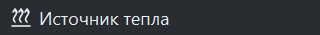
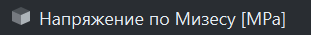
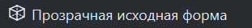
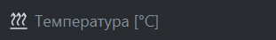
Визуализация
Выполнить визуализациюРассчитывает изображение активной сцены визуализации в фоне.Открыть руководствоГалерея визуализацийОткрывает галерею и доступный результат активного тела визуализации.Открыть руководствоКамераДобавляет камеру в активное тело визуализации.Открыть руководствоПрожекторДобавляет направленный прожектор с регулируемым световым конусом.Открыть руководствоСветДобавляет точечный источник света в общую сцену визуализации.Открыть руководствоСвойства тела визуализацииИзменяет источники и параметры существующей сцены визуализации.Открыть руководствоСолнцеДобавляет направленное солнечное освещение в сцену визуализации.Открыть руководство
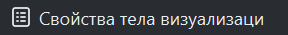
CAM
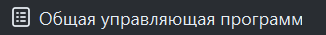
Руководства по запросу не найдены.